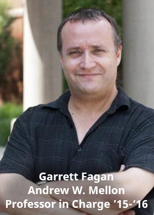
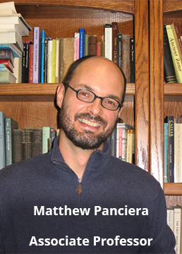
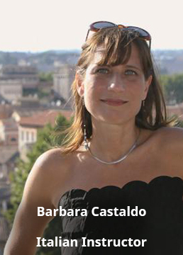

- 
Professor in Charge
Garrett G. Fagan
is Professor of Ancient History at Penn State University. His main research interests lie in the field of Roman history and archaeology, on which he has published two mongraphs (Bathing in Public in the Roman World [Ann Arbor, 1999] and The Lure of the Arena [Cambridge, 2011]). He has edited or co-authored three other books, a fourth is forthcoming, and he has numerous scholarly articles and chapters in print. His current research project is on political purges in the classical world. He has appeared on the PBS science series Nova and on the History Channel, and has produced three courses with The Teaching Company, on the History of Ancient Rome, Emperors of Rome, and Great Battles of the Ancient World.
- 
Associate Professor
Matt Panciera
is Associate Professor of Classics at Gustavus Adolphus College where he regularly teaches all levels of Greek and Latin, in addition to Roman history and Roman art and archaeology. He received his BA in Latin from the University of Toronto, and his MA and PhD in Classics from the University of North Carolina at Chapel Hill. His research interests include Pompeian graffiti and Latin pedagogy, especially the new emphasis on spoken Latin. In the summer of 2014 he organized the very first Tusculanum Minnesotense, a week-long summer institute in spoken Latin for teachers and college faculty. He taught for ICCS twice before, as the resident assistant in 1997-1998 in Rome and as associate professor in 2008-9 in Sicily.
-
Assistant Professor
Leigh Lieberman
received her B.A. and M.A. in Classics from The Johns Hopkins University. Her own experience as a student at the ICCS not only encouraged her to pursue graduate work in classical art and archaeology, but has also significantly influenced her interests and research. Her master’s thesis, entitled “The Nature of the Cults at Poseidonia,” focused on the development of the cults of Hera and Aphrodite in the south Italian colony. She also holds an M.A. in Classical Art and Archaeology from Princeton University, where she is finishing her Ph.D. Her dissertation considers cultural memory and collective identity as reflected through the material culture of Classical and Hellenistic Sicily. While her academic interests focus broadly on Greeks in the West, methodologically, she is also interested in computer applications in archaeology and the digital curation of field data and archival records. Leigh's archaeological background stretches from the field to the museum. She served as an assistant curator for ancient arts at The Johns Hopkins University Archaeological Collection, a Hall Fellow in Ancient Art at the Walters Art Museum, and an ancient art intern at the Princeton University Art Museum. Leigh has excavated with the Università degli Studi di Napoli, “L’Orientale,” at Cuma, Italy, and with the American School of Classical Studies at Corinth, Greece. Since 2008, she has served as the Manager of Data and Information Resources for the Pompeii Archaeological Research Project: Porta Stabia. In 2013, she joined the American Excavations of Morgantina: Contrada Agnese Project as the Data Supervisor. In 2011/12, she studied as a regular member at the American School of Classical Studies in Athens. She also held the Oscar Broneer Traveling Fellowship at the American Academy in Rome during 2013/2014. Leigh is eager revisit the monuments and history of Rome and its surroundings with Centro students this year.
-
Resident Instructor
Alice Hu
is a PhD candidate at the University of Pennsylvania in the Department of Classical Studies. She received her BA in History and Classics from Stanford University in 2010. Her dissertation explores the reception of Greek tragic models in Roman Augustan and imperial epic, focusing primarily on epic authors’ use of tragic models to reflect on issues of succession, paternity, and affiliation, both dynastic and literary. Her research interests are in Latin epic, fifth-century Athenian tragedy, women and gender, intertextuality, and the interactions between literature and culture in Augustan and Flavian Rome. At the University of Pennsylvania, Alice has taught undergraduate courses in Latin and Ancient Greek, has assisted in ancient Greek and Roman history courses, and served as a Graduate Fellow for Teaching Excellence with the Center for Teaching and Learning for 2014-15. She has also spent a season at the Gabii Project field school near Rome. She looks forward to running and tasting her way through Italy, and is excited to explore Rome, both ancient and modern, with Centro students.
- 
Italian Language Instructor
Barbara Castaldo
(Laurea, Università La Sapienza di Roma; M.A., Columbia University; Ph.D., New York University) is specialized in contemporary Italian literature with a doctoral thesis on Italian author Pier Paolo Pasolini (awarded Premio Pasolini in 2009). Her research interests include law and literature scholarship and comparative literature. She has published articles on contemporary Italian authors (Sandro Veronesi, Marco Lodoli, Ennio Flaiano, Pier Paolo Pasolini), and has appeared in a number of TV documentaries and radio interviews for Rai Storia (Italy), Arte TV (France-Germany), Österreich 1 (Austria). She is currently working on a book on Pier Paolo Pasolini’s legal trials. She has taught courses of Italian language at all levels and has been teaching Italian at ICCS since 2005.
-
Art History Instructor
Paul Tegmeyer
began studying art history as an undergraduate at New Mexico State University in Las Cruces, New Mexico, where he was raised. After moving to Italy, actually l'Aquila, outside Rome, in 1983, he began graduate school at Temple University in Rome, and then Philadelphia. He later entered the Ph.D. program at the University of Pennsylvania. His area of specialization is the Italian Renaissance. He began teaching the Renaissance. to Baroque Rome course at ICCS from 1990-92 and again from 1997 on. He also been teaching at John Cabot University in Rome since 1991. Here he has had the opportunity to expand his repertoire beyond the Italian Renaissance, teaching courses on Ancient and Medieval Rome, Baroque art, as well as monographic courses on Renaissance Rome; Raphael; Michelangelo; Bernini; et al. Since 1997 he has also conducted the Rome Seminar for the Smithsonian Institute. His research focuses primarily on various aspects of Roman Renaissance art (Raphael, Pollaiuolo, Michelangelo, et al.). He is also now in the early stages of preparing with other colleagues, a “Guide to Renaissance Rome”.